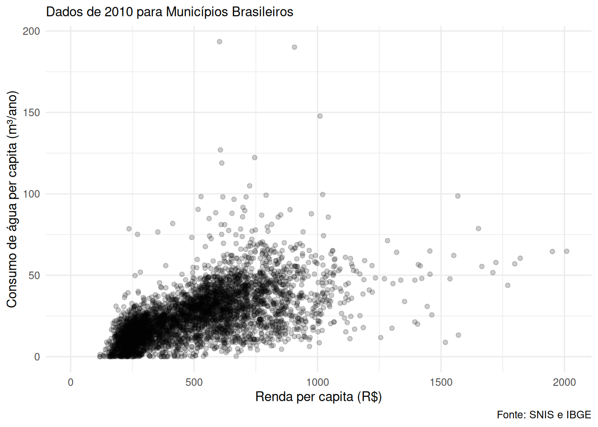
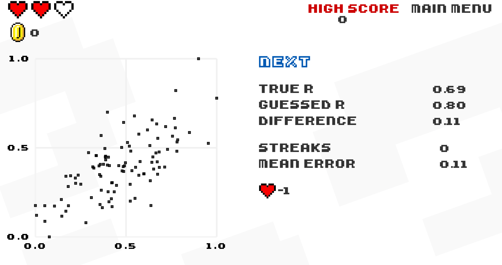
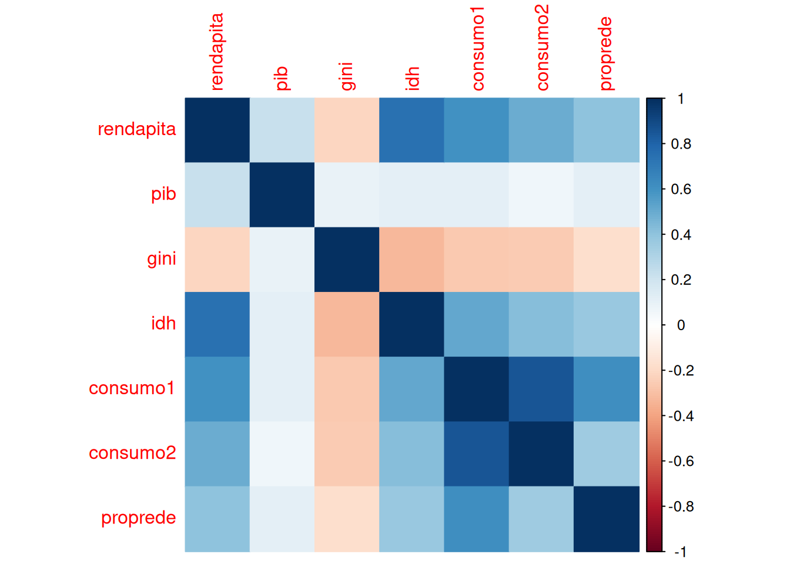
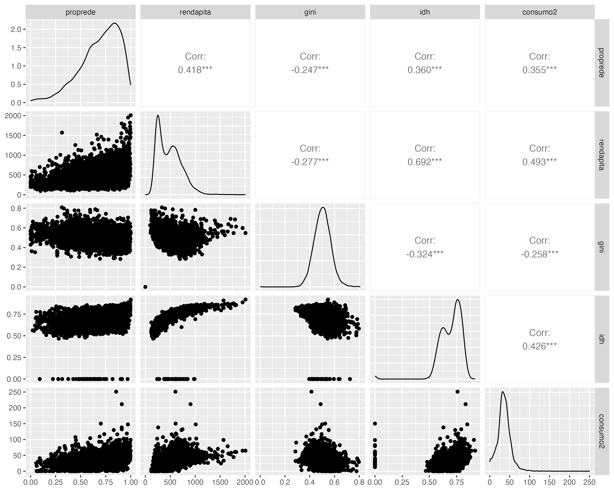

install.packages("tidyverse")
install.packages("corrplot")
install.packages("GGally")6 Prática - Correlação
Explorando a relação linear entre duas variáveis numéricas
Nota
Os conceitos foram apresentados na aula teórica. A seguir, temos uma prática para aplicar esses conceitos. É importante que você tenha assistido à aula antes de realizar esta prática, pois ela se baseia nos conceitos discutidos.
Nota
Essa prática foi muito inspirada pela prática preparada pelo Luis Felipe Bortolatto da Cunha para edições passadas dessa disciplina.
6.1 Carregando os pacotes
Os pacotes necessários para essa prática são:
tidyverse: para manipulação e visualização de dados;corrploteGGally: para visualização de matrizes de correlação;
Podemos instalar os pacotes:
E então carregá-los:
library(tidyverse)── Attaching core tidyverse packages ──────────────────────── tidyverse 2.0.0 ──
✔ dplyr 1.1.4 ✔ readr 2.1.5
✔ forcats 1.0.0 ✔ stringr 1.5.1
✔ ggplot2 3.5.2 ✔ tibble 3.3.0
✔ lubridate 1.9.4 ✔ tidyr 1.3.1
✔ purrr 1.0.4
── Conflicts ────────────────────────────────────────── tidyverse_conflicts() ──
✖ dplyr::filter() masks stats::filter()
✖ dplyr::lag() masks stats::lag()
ℹ Use the conflicted package (<http://conflicted.r-lib.org/>) to force all conflicts to become errorslibrary(corrplot)corrplot 0.95 loadedlibrary(GGally)Registered S3 method overwritten by 'GGally':
method from
+.gg ggplot26.2 Importando os dados
Para executar a análise de correlação vamos utilizar dados demográficos e de consumo de água de 2010, para uma amostra de municípios, extraídos do Censo Demográfico (IBGE) e do Sistema Nacional de Informações sobre Saneamento (SNIS), para investigar se o consumo de água está correlacionado com a renda, conforme análise apresentada por Carmo et al., 2013.
Download: Clique aqui caso queira fazer o download dos dados
Atenção: os dados estão no formato CSV, que é um formato de texto separado por vírgulas. O read_csv2 é usado para ler arquivos CSV que usam ponto e vírgula (;) como separador de campos, o que é o caso deste arquivo.
dados <- read_csv2("https://raw.githubusercontent.com/beatrizmilz/ESHT011-21-analise-dados-planejamento-territorial/refs/heads/main/praticas/dados/agua_rede1.csv") ℹ Using "','" as decimal and "'.'" as grouping mark. Use `read_delim()` for more control.Rows: 5566 Columns: 19
── Column specification ────────────────────────────────────────────────────────
Delimiter: ";"
chr (4): nome_mun, uf, regiao, idh_class
dbl (15): id_ibge, domicil, rede, proprede, id_snis, pib, rendapita, gini, i...
ℹ Use `spec()` to retrieve the full column specification for this data.
ℹ Specify the column types or set `show_col_types = FALSE` to quiet this message.Vamos dar uma olhada para conhecer a estrutura dos dados e as variáveis disponíveis.
glimpse(dados)Rows: 5,566
Columns: 19
$ id_ibge <dbl> 3548807, 4214904, 3303302, 3205309, 3547304, 4205407, 314480…
$ domicil <dbl> 50492, 1312, 169237, 108515, 31610, 147437, 24203, 508456, 7…
$ rede <dbl> 50472, 412, 164768, 107715, 28728, 137984, 22436, 505149, 73…
$ proprede <dbl> 0.9996038976, 0.3140243902, 0.9735932450, 0.9926277473, 0.90…
$ id_snis <dbl> 354880, 421490, 330330, 320530, 354730, 420540, 314480, 4314…
$ nome_mun <chr> "São Caetano do Sul", "Rio Fortuna", "Niterói", "Vitória", "…
$ uf <chr> "SP", "SC", "RJ", "ES", "SP", "SC", "MG", "RS", "DF", "SP", …
$ regiao <chr> "Sudeste", "Sul", "Sudeste", "Sudeste", "Sudeste", "Sul", "S…
$ pib <dbl> 6694384.00, 39035.65, 5831066.00, 9270129.00, 1085714.00, 42…
$ rendapita <dbl> 2008.98, 1570.54, 1951.11, 1820.97, 1798.50, 1770.29, 1709.8…
$ gini <dbl> 0.5480, 0.5638, 0.5983, 0.6124, 0.6858, 0.5474, 0.6914, 0.61…
$ idh <dbl> 0.919, 0.822, 0.886, 0.856, 0.853, 0.875, 0.821, 0.865, 0.84…
$ idh_class <chr> "Muito alto", "Alto", "Alto", "Alto", "Alto", "Alto", "Alto"…
$ ge012 <dbl> 149263, 4446, 487562, 327801, 108813, 421240, 80998, 1409351…
$ ag001 <dbl> 149263, 1774, 487562, 327801, 102006, 413263, 79232, 1409351…
$ ag020 <dbl> 9666.74, 58.94, 31499.85, 19825.98, 6207.20, 18464.15, 4185.…
$ ag022 <dbl> 56873, 501, 154431, 108174, 30583, 156279, 25012, 518953, 85…
$ consumo1 <dbl> 64.763136, 13.256860, 64.606860, 60.481756, 57.044655, 43.83…
$ consumo2 <dbl> 64.76314, 33.22435, 64.60686, 60.48176, 60.85132, 44.67893, …A tabela abaixo apresenta uma descrição de cada variável.
| Código | Descrição |
|---|---|
| id_ibge | Código IBGE (7 dígitos) |
| domicil | Quantidade de Domicílios |
| rede | Quantidade de Domicílios com Acesso à Rede Geral de Água |
| proprede | Proporção de Domicílios com com Acesso à Rede Geral de Água (REDE/DOMICIL) |
| id_snins | Código IBGE (6 dígitos) |
| NOME_MUN | Nome do Município |
| uf | Unidade da Federação |
| regiao | Região do País |
| pib | Produto Interno Bruto 2010 |
| rendapita | Renda per Capita 2010 |
| gini | Índice GINI 2010 |
| idh | Índice de Desenvolvimento Humano 2010 |
| idh_class | Classificação do Índice de Desenvolvimento Humano 2010: Muito Alto >= 0,9; Alto >= 0,8; Médio >= 0,5; Baixo < 0,5. |
| ge012 | População Total Residente no Município |
| ag001 | População Total Atendida com Abastecimento de Água |
| ag020 | Volume Micromedido nas Economias Residenciais Ativas de Agua - 1.000 m3/ano |
| ag022 | Quantidade de Economias Residenciais Ativas Micromedidas |
| consumo1 | Consumo de Água per capita - População Total - m3/ano (AG020/GE012) |
| consumo2 | Consumo de Água per capita - População Atendida - m3/ano (AG020/AG001) |
6.3 Pergunta norteadora
A pergunta que vamos investigar é: o consumo de água (per capita) está correlacionado com a renda (per capita)?
As variáveis que vamos utilizar para responder a essa pergunta são:
consumo1: Consumo de água per capita - População Total - m3/ano (AG020/GE012);rendapita: Renda per capita.
Importante: a correlação é utilizada para investigar a relação entre duas variáveis numéricas.
6.4 Gráfico de dispersão
O gráfico de dispersão é uma representação gráfica que mostra a relação entre duas variáveis numéricas. Cada ponto no gráfico representa um par de valores das duas variáveis.
Por exemplo, podemos representar as variáveis rendapita e consumo1 em um gráfico de dispersão, deixando uma transparência nos pontos (alpha = 0.2) para facilitar a visualização de pontos sobrepostos.
dados |>
ggplot(aes(x = rendapita, y = consumo1)) +
geom_point(alpha = 0.2) +
labs(
tite = "Relação entre Renda per Capita e Consumo de Água per Capita",
subtitle = "Dados de 2010 para Municípios Brasileiros",
caption = "Fonte: SNIS e IBGE",
x = "Renda per capita (R$)",
y = "Consumo de água per capita (m³/ano)"
) +
theme_minimal()Warning: Removed 1149 rows containing missing values or values outside the scale range
(`geom_point()`).
Aviso
Veja que o ggplot apresentou um aviso (warning):
Warning: Removed 1149 rows containing missing values or values outside the scale range (
geom_point()).
Quando estamos criando um gráfico de dispersão, precisamos que ambas as variáveis estejam presentes para cada ponto. Se uma das variáveis tiver valores ausentes (NA) ou fora do intervalo esperado, esses pontos serão removidos do gráfico. Isso é normal e esperado, pois o ggplot não pode plotar pontos com valores ausentes.
Interpretando o gráfico, podemos observar que há uma tendência de que, à medida que a renda per capita aumenta, o consumo de água per capita também tende a aumentar.
No entanto, essa relação não é perfeita e existem pontos que se desviam dessa tendência. Por exemplo: alguns municípios apresentam maiores valores de consumo de água per capita, mesmo com rendas per capita mais baixas, enquanto outros municípios com rendas mais altas apresentam consumos de água per capita mais baixos.
Porém, o foco neste momento é visualizar as tendências.
Para quantificar essa relação, podemos calcular a correlação entre as duas variáveis.
6.5 Correlação
A correlação é uma medida estatística que indica a força e a direção de uma relação linear entre duas variáveis numéricas. o coeficiente de correlação de Pearson apresenta valores entre -1 e 1, onde:
1indica uma correlação positiva perfeita (quando uma variável aumenta, a outra também aumenta);-1indica uma correlação negativa perfeita (quando uma variável aumenta, a outra diminui);0indica que não há correlação linear entre as variáveis.
Nota
Um site divertido para brincar com correlações é o Guess the Correlation. Ele apresenta gráficos de dispersão e você deve adivinhar o coeficiente de correlação!

Para calcular a correlação entre as variáveis consumo1 e rendapita, podemos usar a função cor() do R, que calcula o coeficiente de correlação, e podemos indicar alguns argumentos:
xey: as duas variáveis numéricas que queremos correlacionar;method: o método de correlação a ser utilizado (por padrão, é o coeficiente de correlação de Pearson, porém também é possível calcular utilizando os métodos"spearman"e"kendall");use: como lidar com valores ausentes (NA). Por exemplo, podemos usaruse = "complete.obs"para remover os casos com valores ausentes antes de calcular a correlação.
correlacao <- cor(x = dados$rendapita, # variável
y = dados$consumo1, # variável
method = "pearson", # método de correlação
use = "complete.obs" # usar apenas observações completas
)
correlacao[1] 0.6012537A correlação entre as variáveis renda e o consumo de água per capita é de 0.6, indicando a mesma correlação positiva que o gráfico de dispersão permitiu visualizar.
6.6 Matriz de correlação
Até agora, calculamos a correlação entre duas variáveis específicas. No entanto, podemos calcular a correlação entre várias variáveis numéricas de uma vez, criando uma matriz de correlação.
Vamos recapitular alguns cuidados: - Correlação deve ser usada apenas com variáveis numéricas; - Não devemos usar variáveis de identificação, como códigos IBGE, nomes de municípios, etc;
Para construir uma matriz de correlação, primeiro é necessário selecionar as variáveis que desejamos investigar (com a função select()), para depois calcular o coeficiente de correlação entre cada dupla de variáveis (com a função cor()).
Vamos criar um objeto com as variáveis que queremos investigar:
dados_selecionados <- dados |>
select(rendapita, pib, gini, idh, consumo1, consumo2, proprede)Agora podemos calcular a matriz de correlação entre essas variáveis, utilizando a função cor():
dados_selecionados |>
cor(method = "pearson", use = "complete.obs") rendapita pib gini idh consumo1 consumo2
rendapita 1.0000000 0.22623371 -0.21476760 0.7415117 0.6012537 0.49269163
pib 0.2262337 1.00000000 0.09083846 0.1190256 0.1176077 0.06518107
gini -0.2147676 0.09083846 1.00000000 -0.3259986 -0.2680246 -0.25814509
idh 0.7415117 0.11902559 -0.32599859 1.0000000 0.5143510 0.42554311
consumo1 0.6012537 0.11760770 -0.26802459 0.5143510 1.0000000 0.85700512
consumo2 0.4926916 0.06518107 -0.25814509 0.4255431 0.8570051 1.00000000
proprede 0.4012507 0.11643021 -0.17370841 0.3731320 0.6117510 0.35458719
proprede
rendapita 0.4012507
pib 0.1164302
gini -0.1737084
idh 0.3731320
consumo1 0.6117510
consumo2 0.3545872
proprede 1.0000000Esse resultado pode ser mais fácil de ser interpretado caso os valores sejam arredondados. Podemos fazer isso com a função round():
dados_selecionados |>
cor(method = "pearson", use = "complete.obs") |>
round(2) rendapita pib gini idh consumo1 consumo2 proprede
rendapita 1.00 0.23 -0.21 0.74 0.60 0.49 0.40
pib 0.23 1.00 0.09 0.12 0.12 0.07 0.12
gini -0.21 0.09 1.00 -0.33 -0.27 -0.26 -0.17
idh 0.74 0.12 -0.33 1.00 0.51 0.43 0.37
consumo1 0.60 0.12 -0.27 0.51 1.00 0.86 0.61
consumo2 0.49 0.07 -0.26 0.43 0.86 1.00 0.35
proprede 0.40 0.12 -0.17 0.37 0.61 0.35 1.006.6.1 Visualizando a matriz de correlação
Também é possível visualizar a matriz de correlação construindo um gráfico, usando a função corrplot() do pacote corrplot.
dados_selecionados |>
cor(method = "pearson",
use = "complete.obs") |>
corrplot(method = "color")
A função corrplot() apresenta o argumento method permite escolher o tipo de visualização. Os valores podem ser: "circle", "square", "ellipse", "number", "shade", "color" e "pie".
Outra forma de visualizar a matriz de correlação é utilizando a função ggpairs() do pacote GGally, que cria uma matriz de gráficos de dispersão, histogramas e correlações entre as variáveis selecionadas:
plot_ggpair <- dados |>
select(rendapita, gini, idh, consumo1) |>
GGally::ggpairs()
plot_ggpair
6.7 EXTRA: Teste de significância
Será que 0.6 é significativo? Se fosse -0.3, seria significativo? E se fosse 0.1? Uma forma de verificar isso é através de um teste de hipótese. Nesse teste, avaliamos se a correlação observada é tão próxima de zero que podemos considerar que o que observamos é fruto do acaso.
Para testar a significância da correlação entre duas variáveis, podemos usar o teste de hipótese para o coeficiente de correlação de Pearson. Esse teste nos dá um guia para avaliar se a correlação observada é significativa.
É importante definir antes de realizar o teste de significância qual é a hipótese nula e a hipótese alternativa:
Hipótese nula (H0): Não há correlação entre as duas variáveis (coeficiente de correlação é igual a zero).
Hipótese alternativa (H1): Há correlação entre as duas variáveis (coeficiente de correlação é diferente de zero, podendo ser positivo ou negativo).
Para testar a significâcia do coeficiente de correlação de Pearson podemos usar a função cor.test(), especificando os argumentos:
xey: as duas variáveis numéricas que queremos correlacionar;method: o método de correlação a ser utilizado. Por padrão, é o coeficiente de correlação de Pearson, mas também é possível calcular utilizando os métodos"spearman"e"kendall". Ao mudar o método, também mudamos o teste de hipótese realizado;alternative: o tipo de teste de hipótese a ser realizado. Os valores possíveis são"two.sided"(bilateral),"less"(unilateral à esquerda: valor negativo) e"greater"(unilateral à direita: valor positivo).conf.level: o nível de confiança para o intervalo de confiança do coeficiente de correlação (por padrão, é 0.95, ou seja, 95% de confiança).
resultado_cor_test <- cor.test(x = dados$rendapita, # variável
y = dados$consumo1, # variável
method = "pearson", # método de correlação
alternative = "two.sided", # teste bilateral
conf.level = 0.95, # nível de confiança
)
resultado_cor_test
Pearson's product-moment correlation
data: dados$rendapita and dados$consumo1
t = 49.997, df = 4415, p-value < 2.2e-16
alternative hypothesis: true correlation is not equal to 0
95 percent confidence interval:
0.5820832 0.6197561
sample estimates:
cor
0.6012537 broom::tidy(resultado_cor_test)# A tibble: 1 × 8
estimate statistic p.value parameter conf.low conf.high method alternative
<dbl> <dbl> <dbl> <int> <dbl> <dbl> <chr> <chr>
1 0.601 50.0 0 4415 0.582 0.620 Pearson's… two.sided Os resultados de testes estatísticos no R são confusos no início. O objeto criado é uma lista, e podemos acessar os componentes dessa lista para obter informações específicas utilizando o operador $.
names(resultado_cor_test)[1] "statistic" "parameter" "p.value" "estimate" "null.value"
[6] "alternative" "method" "data.name" "conf.int" 6.7.1 statistic
O componente statistic é o valor do teste estatístico usado para calcular o valor-p. No caso da correlação de Pearson, esse valor é calculado com base no valor de t, por conta das propriedades da estatística de Pearson. Esses valores não costumam ser interpretados isoladamente neste contexto.
resultado_cor_test$statistic t
49.99709 6.7.2 parameter
O componente parameter indica os parâmetros associados ao teste. No caso da correlação de Pearson, são os graus de liberdade, que é calculado como n - 2, onde n é o número de observações completas (ou seja, o número de pares de valores das duas variáveis). Isso acontece porque estamos calculando duas variâncias, o que diminui os graus de liberdade disponíveis para o teste em 2.
resultado_cor_test$parameter df
4415 Podemos conferir isso contando o número de observações completas (ou seja, sem valores ausentes) nas duas variáveis que estamos correlacionando:
dados |>
drop_na(rendapita, consumo1) |>
nrow()[1] 44176.7.3 p.value ou valor-p
O valor-p (ou p-value) indica a probabilidade de observar um valor tão ou mais extremo quanto o observado, assumindo que a hipótese nula (correlação = 0) seja verdadeira. Em uma linguagem mais simples, o valor-p nos diz a probabilidade de obtermos o resultado observado ao acaso. Neste contexto, é usado como guia para decidir se a correlação observada é estatisticamente significante.
Aviso
ALERTA: O R arredonda os valores por padrão para algumas casas. Por isso, eu prefiro interpretar o valor-p a partir do resultado completo do teste apresentado no console (e não usando o valor da lista, ex. resultado_cor_test$p.value).
Neste caso, o resultado encontrado foi muito baixo, p < 2.2e-16, indicando que é altamente improvável obter esse resultado se a correlação verdadeira fosse zero (ou seja, se não houvesse correlação entre as variáveis).
Isso significa que podemos rejeitar a hipótese nula (H0) de que não há correlação entre as duas variáveis.
6.7.4 estimate
É a estimativa do parâmetro de interesse. No caso do teste de correlação de Pearson, é o coeficiente de correlação calculado entre as duas variáveis. Esse valor é o mesmo que calculamos anteriormente com a função cor().
resultado_cor_test$estimate cor
0.6012537 6.7.5 null.value
O componente null.value indica o valor do parâmetro sob a hipótese nula. No caso do teste de correlação de Pearson, esse valor é zero, pois a hipótese nula afirma que não há correlação entre as duas variáveis. Em usos mais avançados, poderíamos alterar esse valor, para verificar se a correlação é diferente de um valor específico.
resultado_cor_test$null.valuecorrelation
0 6.7.6 alternative
O componente alternative indica qual foi a hipótese alternativa testada. No caso do teste de correlação de Pearson, o valor padrão é "two.sided", o que significa que estamos testando se a correlação é diferente de zero (ou seja, se há uma correlação positiva ou negativa).
resultado_cor_test$alternative[1] "two.sided"6.7.7 method
O componente method indica o método utilizado para calcular a correlação. No caso do teste de correlação de Pearson, o valor é "Pearson".
resultado_cor_test$method[1] "Pearson's product-moment correlation"6.7.8 data.name
O componente data.name indica o nome dos dados utilizados no teste. No caso do teste de correlação de Pearson, é uma string que contém os nomes das duas variáveis que foram correlacionadas.
resultado_cor_test$data.name[1] "dados$rendapita and dados$consumo1"6.7.9 conf.int
O componente conf.int contém o intervalo de confiança para o coeficiente de correlação. Esse intervalo é calculado com base no nível de confiança especificado (por padrão, 95%) e fornece uma faixa de valores que esperamos que contenham o verdadeiro coeficiente de correlação (lembrando que temos uma amostra de municípios, já que não temos dados para todos eles).
Além disso, esse elemento também indica qual foi o nível de confiança (conf.level) utilizado para calcular o intervalo de confiança.
resultado_cor_test$conf.int[1] 0.5820832 0.6197561
attr(,"conf.level")
[1] 0.956.8 Materiais complementares
- Materiais da disciplina Ciência de Dados Aplicada ao Direito II:
- Vídeo: Correlação linear bivariada no R por Fernanda Peres: